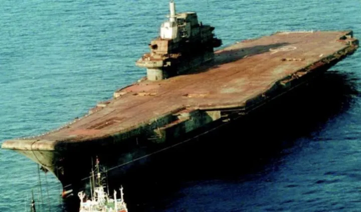
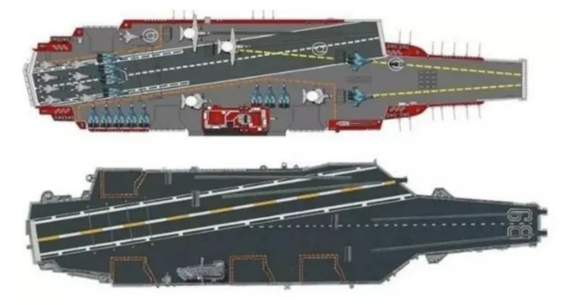

瓦良格号到达中国的曲折历程
「瓦良格」号到达中国的曲折历程，不是三言两语能说清的。
「辽宁号」航空母舰，对于国人来说是无人不知，无人不晓。
而这艘航母的前身，前苏联未完工的「瓦良格」号是如何来到中国的，很多人并不清楚。
坊间一直流传的说法是政府委托香港商人从乌克兰竞拍购买，网上大多数文章也是这样叙述的。
然而真正的情况远非如此。
购入「瓦良格」号的背后，有敲诈，有阴谋，也有背叛。
有人借此招摇撞骗，也有人为此含冤蒙屈。
现在我们通过已公开的真实资料还原史实，揭秘当时这艘「国之重器」究竟遇到了哪些跌宕起伏，又一波三折的「购入」过程。
1、失控的 2.3 亿人民币
1999 年的春节，北京城里家家户户喜气洋洋，唯独华夏证券董事长邵淳感觉格外阴郁寒冷，心里满是焦虑不安，因为他管理的公司有一大笔钱面临着失控的风险，数额高达 2.3 亿人民币！
这笔钱既不是投资某项工程，也不是借给某个公司，而是用来干一件普通人难以想象的大事：买航母。
对于搞金融的人来说，最忌讳的事情就是对资金不能把控。
节后一上班，邵淳就抓起办公室的电话气吼吼地说：「去催徐增平，看看他给乌克兰汇了多少钱。我要看徐增平给乌克兰汇款的底单，我怀疑他把买航母的钱挪用了！」
邵淳口里的徐增平，是一名原籍山东的香港商人，当时 47 岁，在大陆当过兵，1988 年移居香港开始做生意。
徐增平曾信誓旦旦地保证，拿到 2.3 亿就能买回一艘航母。而今钱给了，航母却没了下文，这让邵淳非常恼火。
巨款握在这个不讲诚信的人手里，操纵权也在他手上，可他却不如实向邵淳提供情况，搞得邵淳很被动，越来越感觉自己是被骗了。
2.3 亿巨款怕是要打水漂！
更要命的是，买航母这件事完全是邵淳的个人决定，没有经过公司领导集体讨论，公司高层领导没一个人知道。如果钱没了，船也没了，邵淳轻则被开除，重则要坐大牢。
2、香港商人与航空母舰
想要说清楚整件事的来龙去脉，还要从邵淳与徐增平的相识说起。
邵淳是个有着深厚爱国情怀的商业精英，他深知海军建设对国家的重要性。甲午海战旧中国积贫积弱任人宰割，到了新中国，中国海军发生了翻天覆地的变化。
可就在两个月前，印尼发生排华事件，短短三天里，近 1200 名华人遇难，上百名华人妇女遭到强暴。
邵淳感叹：中国要是能有自己的航空母舰该多好啊。有了航母，中国人的腰杆子就硬，可以震慑印尼暴徒，保护华侨。
不成想，这个机会让他给遇上了。
他偶然听朋友说起，有个港商中标购买了乌克兰航母「瓦良格」号，然而亚洲金融危机的爆发，让这个港商资金吃紧，希望在内地寻求资金支持继续推动这个购舰项目，邵淳便起了兴趣。
乌克兰有意出售「瓦良格」舰的事情，早在 5 年前，邵淳就从《舰船知识》杂志上有所了解。
或许是这份爱国心，航母情，最终让上天把「瓦良格」号项目摆在了他面前。
1998 年 7 月的一天，北京一家普通的民营公司内弥漫着试探、博弈与猜疑。
邵淳正在与一个衣着体面气度不俗的香港商人会谈，这个港商就是中标购买了「瓦良格」的港商——徐增平。
徐增平一张嘴就是民族大义、国家利益之类的豪言壮语。
邵淳是证券界翘楚公司的一把手，并不容易被忽悠。他见徐增平各种戴高帽说空话，干脆单刀直入：「重要性我都知道，这个船我听说过。但是为什么要你来办这个事？」
徐增平解释道：「买航母这是个秘密的事情，不能公开买，不能以国家的名义买。要以国家的名义买，那就贵了，我们作为小公司，名义上就是买回来放澳门当赌船，这是小生意。乌克兰现在反正卖不出去，我们买就比较便宜。这叫『国家行为，民间操作』。」
邵淳紧接着又问：「那你买多少钱？」
徐增平得意洋洋地说：「2000 万美元。」
邵淳很意外：「2000 万美元？」
徐增平坚定地说：「是的，2000 万美元。」
但邵淳马上对这个极低的售价提出了质疑：「美国『尼米兹』号公开报价 33 亿美元，就说人家个头大 9 万吨，你这个个头小 6 万吨，人家是新的，你这个还没造完，那卖 6 个亿行不行，卖 3 个亿行不行，你这 2000 万美元是不是差得有点儿大啊？」
徐增平听闻倍感吃惊，没想到他碰到的是个明白人。
邵淳又问：「这个事既然是利国利军的大好事，为什么国家不出面来买，2000 万美元对于国家来说，那叫事吗。这事怎么轮到你们来办？」
徐增平解释：「这么做主要是为了保密，不让国外情报机构觉察，购船过程和资金来源必须由民间公司出面。只有通过我们这样的不起眼儿的公司，偷天换日给它弄过来。船到之后，国家自然会接手。到时候也不会亏了咱们。」
邵淳接着又问：「那你有没有红头文件啊？」
徐增平没有正面回复，而是转移话题。
此事属于高度机密，不过前期只能以海上娱乐城项目运作。先放在澳门，时机成熟时军队会接手的。现在的困难是资金紧缺，时间很紧，一旦资金不到位，造成与乌克兰方面的合同违约，担心航母落入印度、台湾之手。
最后，徐增平油滑地说：「别看这个船是花 2000 万美元拍下来的，实际上还要打点各方关系，要多花不少钱。现在正准备办理澳门方面的的批文、进口许可证等，因此急需人民币两千万元。希望你们能考虑，先以借款形式支持一下，待办完航母项目前期手续后，再谈下一步的合作。如果你们不想参与后期运作，我可以按时归还借款。」
邵淳此时的心情有些矛盾，内心希望徐增平的话是真的，毕竟他太希望中国有自己的航母了，但是空口无凭，徐增平的话让他半信半疑。
邵淳疑惑地问：「你怎么证实这个事啊？」
徐增平不假思索地回答：「我们有投标的文件，我们已经搞定了。这个事情很敏感，机会也难得，是利国利民利军的大事，一开始我也不敢接，既然接了，就得做好。现在资金有点缺口，也不多，就两千万元人民币，看你能不能帮帮？过了年就能回来，我就用半年左右。」
邵淳心里思考了片刻：钱倒不多，时间也不长。于是说：「你把中标文件拿来，我先看看文件吧！」
徐增平见有戏，赶紧说：「文件在香港，需要的话我回香港去拿。」
第一次见面，就这样结束了。
90 年代中期，乌克兰决定出售完工近 70% 的瓦良格号
- 
3、似乎一切都很正常
一周之后，徐增平还真把中标文件给邵淳送来了。
文件一共有十几份，一套俄文版，一套英文版，还有一套中文版的非正式文件，是香港的翻译公司翻译的。
邵淳将文件摊在桌子上一页一页地仔细看，第一感觉是：很正规，不像是假的。
这里有个细节，邵淳学过八年俄文，他看出来其中两份文件虽然看着像是俄语，其实是乌克兰语，因为两者仅在个别字母上有区别。
当时俄文文件作假很难，乌克兰文就更难，所以邵淳断定徐增平买航母这事是真实的，而且成交价的确只要 2000 万美元。
邵淳此时激动了，如果这件大事自己可以出一份力，就能提高国防力量。
但是这件事要怎么运作呢？
华夏证券是国企，不能直接把钱借给徐增平，不然这事又变成了「以国家名义」。而且向外借款需要通过董事会，这事知道的人就多了不利于保密，董事会也不一定会同意。
于是他找来了自己的得力干将：吴宇。
找他原因有三：第一，他是部队家庭出身，政治上可靠；第二，他掌控的隆泰源公司是华夏证券的全资子公司，有钱；第三，让隆泰源向外借款可以不经董事会讨论，以达到「保密」的目的。
然而邵淳还是对于这个刚刚认识的港商徐增平不放心。出于谨慎，邵淳表示钱不能直接借给徐增平，万一真打了眼就麻烦了。
他决定将钱借给这件事的牵线人，也就是介绍徐增平和邵淳认识的人的公司，再由这家公司转给徐增平，这样邵淳和牵线人是借贷关系，牵线人也会帮着邵淳来监督徐增平的资金使用情况，万一出事追债也好追。
一切都谈妥之后，在 8 月底的时候，徐增平顺利收到两千万人民币借款。
4、好像有那么一点点不对劲
两千万人民币，对于当时年利润接近 10 个亿的华夏证券来说，真算不上什么。以至于邵淳当时既没有要利息，也没有要任何抵押，反正就半年，反正支持的是国家需要的，自己喜欢的事业。更重要的是当时他正忙于华夏内部整顿，没有太多精力管这事。
然而事情并没有邵淳想象得那么简单。
九月初，徐增平又与邵淳见面，上来先是一顿忽悠，说「上级领导」对华夏借款很满意，希望继续给予支持，将航母拖回来，为国家做贡献。所以嘛……
想再借六千万人民币。
这让邵淳心生不快，你想要八千万为什么不一次说清楚啊。
但是如果不借，这航母可能就真没了，损失两千万人民币是小，损失航母那就太可惜了。
徐增平见邵淳的态度不积极，就解释说，原来计划得挺好，结果赶上香港金融风暴，别人欠我的钱收不回来了。怎么办？乌克兰那边的钱还得付啊！希望能帮帮忙，周转一下。
邵淳沉思不语。
徐增平看出邵淳犹豫不决，赶忙对他说：「邵总，你有什么要求可以提。」
邵淳一听这话，就试探地问：「你们可以给什么条件？」
徐增平赶紧接话：「知道你不缺钱，就不说钱的事了。我可以通过关系给你办一个单程签证。」
邵淳很疑惑：「办一个「单程」干什么呀？」
徐增平暗示道：「将来有什么情况，你需要出去，随时就可以走。」
一听这话，邵淳的脸瞬间沉了下来了，厉声说道：「我能有什么事？我不想到国外去，到国外我活都没法活。特别是这个船，本身是好事，有什么必要？如果非要问我有什么要求，我要求你们专款专用，把项目赶紧完成，尽快把船拖回来，把钱还给我们。」
多亏了当时邵淳没有要那个单程签证，如果真要了，事情发展到后来他就是跳进黄河洗不清了。
邵淳此时的心情很矛盾：他现在已经对徐增平心生反感，感觉到这个人「满嘴跑火车」，不老实。
可又一想：万一他真的就缺这六千万呢？也许再支持他一下，事情就办成了。
对于邵淳来说，他太想把那个「瓦良格」号航母买回来了！不过现在必须更慎重。他继续问道：「六千万，不是个小数目，你用什么做抵押？」
徐增平回答：「我没有什么可以做抵押。我在澳门成立了一个公司－－澳门创律旅游娱乐有限公司，你们可以占有这个公司的股份。」
邵淳觉得，这倒是一个解决问题的办法。再借六千万人民币给他，共计八千万人民币，不到 1000 万美元，澳门创律公司的资产就是这个 2000 万美元的「瓦良格」。
想到这里，他说：「如果这样的话，八千万人民币，占公司一半的股份了。」
徐增平说：「我们占 51%，你们占 49%，怎么样？」
邵淳觉得可以，答应再借六千万元人民币支持这个项目。
徐增平的手段，不只是又从邵淳那里借出了钱，他还在股份上打起了小算盘。
没过几天，他又提出以八千万持有澳门创律 49% 的股份太多了。虽然航母的价值是 2000 万美元，但是从黑海到中国还需要拖船费停泊费、过海峡费、物资供应费等等费用。
最后他狮子大开口，将澳门创律的总资产估值定为 1.2 亿美元，其目的还是想让邵淳继续往这个项目上扔钱。
好家伙，这谁受得了，就算以上费用加起来也不可能溢价 6 倍啊！
经过几个回合的谈判，双方最终确认澳门创律的总资产估值为 6000 万美元，牵线人公司股份占比 49%，可以简单理解为替华夏代持，应出资 2940 万美元（包括已经借款的六千万人民币）。
可是谁都不知道，徐增平是个妥妥的博弈「高手」，他其实连航母的购买合同都没签，只花了 200 万美元做定金。
在航母还没离开乌克兰时，他就开始赚钱了。
被蒙在鼓里的邵淳认为，6000 万美元相当于美国「尼米兹」航母 5% 的价格，还是划算的，只要把事情搞成，把船拖回来就行。
不成想，他已经陷入了徐增平设下的陷阱里。
瓦良格号与当时最大的航母尼米兹号大小对比示意图
- 
5、没有红头文件，也没有国家行为
9 月底，邵淳、吴宇，应徐增平之邀，到香港参加创律公司成立 10 周年纪念活动，这一次邵淳可是大开眼界。
公司设在香港铜锣湾的标志性建筑——世贸中心大厦内，在寸土寸金的香港，占了两层楼，十分气派。
徐增平的办公室更是奢华，有 200 平之大。
屋内陈设的高级紫砂壶、烟斗，琳琅满目，都是价格不菲的稀缺收藏品。
但这等「实力」的炫耀，却让邵淳起了戒心。
徐增平的奢靡铺张让邵淳担心，自己借出去的钱都会被挥霍掉。
澳门创律只是个空壳公司，干活儿的人都在香港。邵淳需要有个人在香港帮忙盯着徐增平，于是他看上了同样出席纪念活动的香港达程有限公司董事长兼总经理，张勇。
张勇这时已经 60 岁了，和徐增平一样也是山东人，1989 年移居香港，他给邵淳的感觉就是为人忠厚，本本分分。
邵淳决定将张勇的公司收购为华夏证券公司子公司，一来可以在香港帮华夏证券开展业务，二来就是有人在香港面对面和徐增平沟通，免得让徐增平觉得天高皇帝远，没人知道他在干什么。后来邵淳还让张勇成为了澳门创律董事。
和张勇谈好之后，邵淳继续向徐增平提出要看购买「瓦良格」号航母的「红头文件」，徐增平先是支支吾吾说文件是国家机密不方便拿出来，后又提出可以请领导面谈，邵淳也就姑且先信他。
国庆之后，徐增平迟迟没有安排邵淳和领导见面，此时邵淳对徐增平的信任和耐心已经丧失殆尽。
而此时的徐增平也很着急，因为他压根就没有钱买航母，离完成付款还差一大笔钱，如果钱搞不定，前期他设计了这么多最后都会变成泡影。购买航母这件事对于他来说是万万不能搞砸的，这远不是欠债几千万人民币的问题。
10 月中旬，徐增平以「确保航母在 10 月底务必离港为由」，请求邵淳再次出资 2000 万美元（折合人民币约 1.7 亿）。
这次邵淳就没那么好糊弄了，他郑重其事地答复徐增平：「必须有上级领导出面证实航母项目是「国家的事」，才能继续提供借款；如不能证实，前期提供的借款也必须收回。」
徐增平迫于无奈，在 10 月 21 日晚上安排了邵淳与领导见面，这个领导就是航母购买项目的真正发起者和幕后推手，开国元帅贺龙之子，时任海军副司令员的贺鹏飞。
在会面过程中，贺鹏飞证实买航母的事是真的，只是中央立项批准过程太复杂，他希望通过民间商人先买回，毕竟机会千载难逢，错过以后就没机会了。